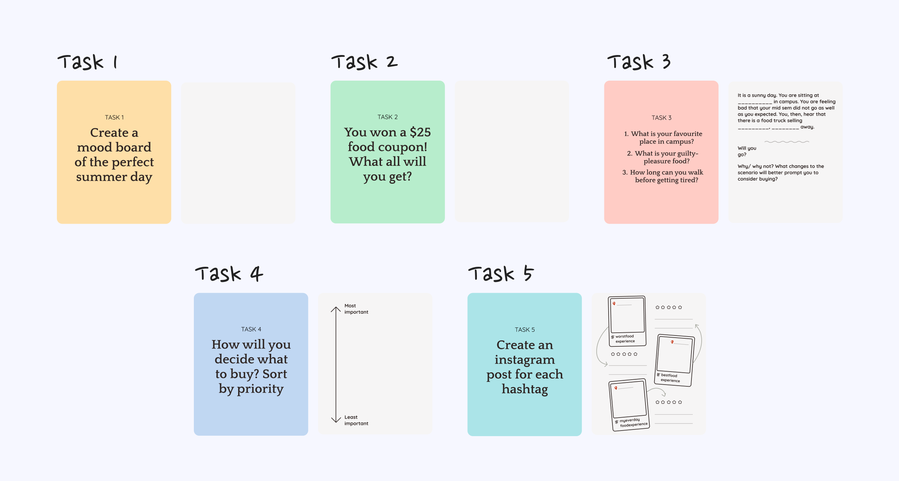
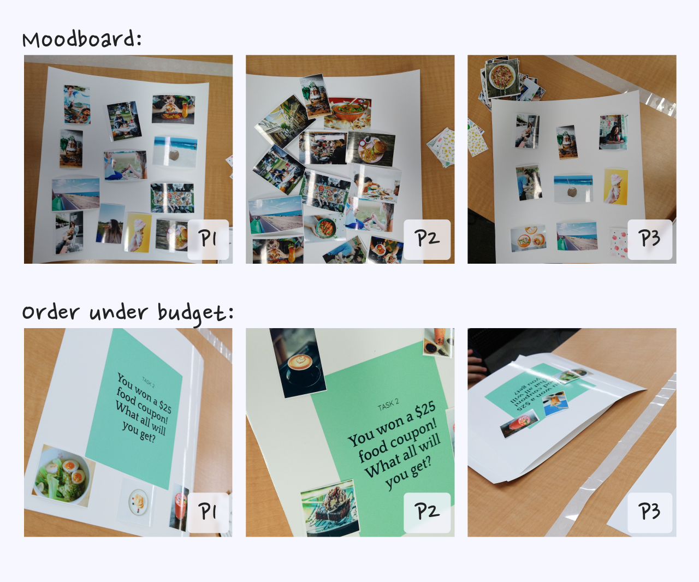
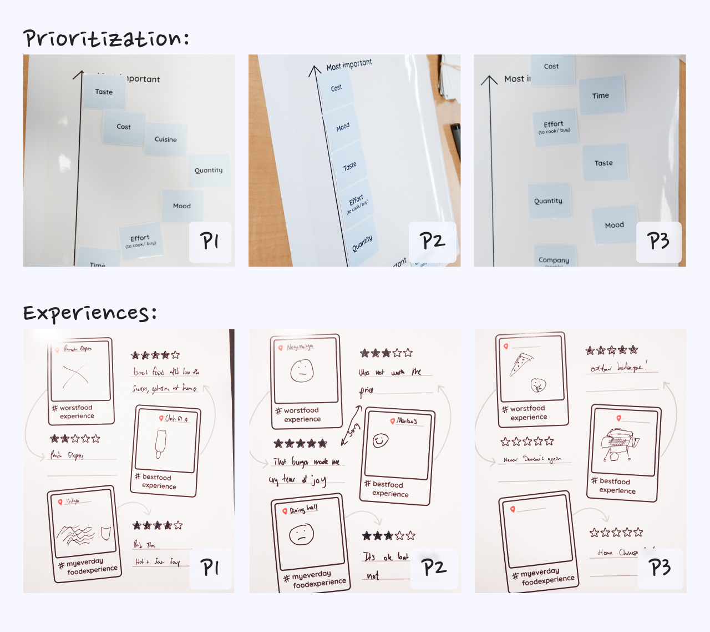

Problem
As part of a school project for the Qualitative Research Methods course, I conducted a participatory design study with three classmates acting as the participants. My aim was to explore how we could design food experiences tailored to students on campus. I had 30 minutes to complete the session.
Results
Based on insights gained from the five tasks centered around food, I formulated three "how-might-we" insights.

I designed five short activities to gather insights on an ideal dining experience on campus.
Process
I devised the following five short tasks:
- Creating a mood board illustrating their ideal summer day.
- Deciding a food order within a set budget.
- Crafting a scenario and making a decision given the scenario.
- Prioritizing decision-making factors.
- Describing best, worst, and everyday food experiences through sketches.

The activity cards for each of the five activities.
"I'd wait to get back home... so that I can watch Netflix during dinner."
Insights
- Participants exhibited diverse social preferences regarding dining, ranging from solitary to intimate or communal gatherings.
- All three participants expressed a fondness for their respective home cuisines, whether it be pancakes, Indian dishes, or Asian food.
- The decision to dine out was influenced by various factors such as food quality, price, and proximity to school or suitability to work at the dining place.
- Cost emerged as a primary concern for all participants, with one student emphasizing the importance of separating dining areas from workspaces.
- Experiences were perceived less favorably when expectations were high, highlighting the impact of prior dining experiences.

The moodboards designed and orders picked by the participants.
How might we maintain a distinction between work and dining, offer access to comfort foods, and accommodate varied socialization preferences?

The priorities arranged and the experiences sketched by the participants.
Design implications
- How might we maintain a clear distinction between work and dining spaces while keeping them conveniently close? One solution could involve utilizing different table designs—organic shapes for dining areas and geometric layouts for workspaces.
- How might we offer access to comfort foods? Given the diverse cultural backgrounds of students and their attachment to native cuisines, occasional offerings of different cuisines could provide a sense of home comfort. For instance, students could opt into dining on days when specific cuisines are featured.
- How might we accommodate varied socialization preferences and scenarios? By designing flexible physical settings and offering a range of food options, we can cater to students' preferences for privacy or sociability. This could involve providing portable meals for students on the go, as well as full-course dining options to encourage communal gatherings.